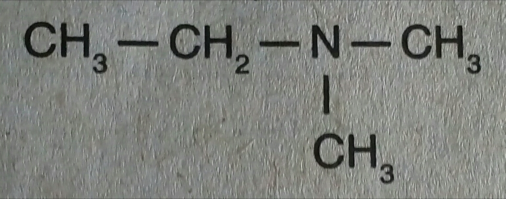
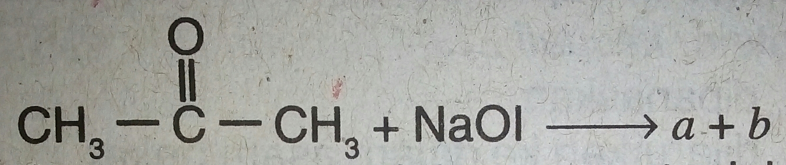

1.Perhatikan senyawa berikut!

Nama yang tepat untuk senyawa di atas adalah....
butanamina
N-metilpropanamina
N-etilpropanamina
N,N-dimetilpropanamina
N,N-dimetiletanamina
2.Senyawa haloalkana yang digunakan sebagai antiseptik dengan sebutan
iodoform adalah....
CBr²=CIF
CH²=CHCI
CF³-CHCIBr
CHI³
CHF²-CCI²Br
3.Perhatikan senyawa alkanol berikut.
1) 2-propanol
2) 2-metil-2-butanol
3) 3-pentanol
4) 2-butanol
Senyawa alkanol yang bersifat optis aktif adalah....
1,2, dan 3
1 dan 3
2 dan 4
4
1,2,3, dan 4
4.Sebanyak 60 gram alkanol dapat bereaksi dengan logam natrium
menghasilkan 11,2 liter gas hidrogen (STP).
Alkanol tersebut adalah....
pentanol
butanol
propanol
etanol
2-metilpropanol
5.Oksidasi isobutanol akan menghasilkan....
metoksipropana
butanal
3-metil-2-butanon
2-metilpropanal
2-butanon
6.Di antara senyawa berikut, yang tergolong alkoksialkana adalah....
CH³CH(CH³)CH(OH)C²H5
CH³CH²CHO
CH³COOCH³
CH³CH(C²H5)COCH³
CH²CHOCH³C²H5
7.Senyawa berikut yang merupakan zat aditif pada bensin adalah....
2,2,4-trimetilpentana
metil tersierbutil eter
dimetil keton
etil propil eter
2,3-dimetilbutana
8.Reaksi etanal dengan gas hidrogen akan menghasilkan....
etena
etana
metoksimetana
asam etanoat
etanol
9.Perhatikan kegunaan senyawa karbon berikut.
1) Untuk mengawetkan preparat biologi.
2) Untuk membuat berbagai jenis plastik termoset.
3) Sebagai pembersih cat kuku.
4) Sebagai obat antiseptik.
Yang merupakan kegunaan metanal adalah....
1 dan 2
1 dan 3
2 dan 3
2 dan 4
3 dan 4
10.Senyawa alkanon dihasilkan dari oksidasi....
2-metil-1-butanol
2-metil-2-butanol
3-metil-2-butanol
2,3-dimetil-2-butanol
2,3,3-trimetil-1-butanol
11.Perhatikan reaksi berikut.

Senyawa a dan b berturut-turut adalah....
natrium metoksida dan iodo etanol
natrium etanoat dan iodometana
natrium iodida adan metil etanoat
natrium iodida adan etil metanoat
natrium metoksida dan iodoform
12.Asam propanoat dapat dibuat dengan cara mengoksidasi....
CH³COOCH
CH³CH(OH)CH³
CH³CH²OH
CH³CH²CHO
CH²(OH)CH²CH²(OH)
13.Jumlah isomer posisi dari alkanol dengan rumus molekul C5H12O adalah....
2 buah
3 buah
4 buah
5 buah
6 buah
14.Reaksi esterifikasi etilen glikol dengan benzena 1,4-dikarbosilat menghasilkan
poliester yang dapat digunakan sebagai....
bahan pembuat sabun
bahan pembuat kain
pelarut damar dan lak
bahan pembuat cat emulsi
bahan pembuat lilin
15.Toluena, fenol, dan tiofena dikenal sebagai senyawa golongan....
parafin
heterosiklik
polisiklik
aromatik
sikloalkena